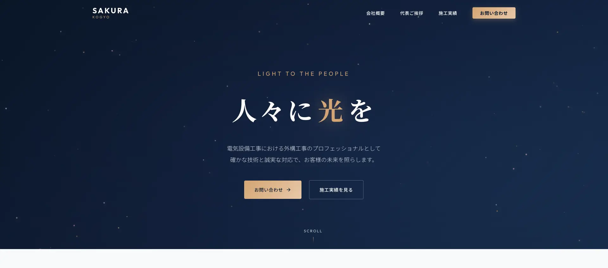

維持費0円で始めやすい
GitHub Pagesを活用した静的サイトで、毎月のサーバー代や保守費用を抑えやすい構成です。公開後も固定費を重くしません。
建設業・士業専門 / IT初心者も安心
全国800社のホームページを調査し、業種・目的に合った構成で制作します。月額費用はかかりません。
文章整理、導線設計、公開設定までまとめて進められます。
Strengths
維持費・設計の根拠・進め方・コミュニケーションの4点から、このサービスの特徴をまとめました。
GitHub Pagesを活用した静的サイトで、毎月のサーバー代や保守費用を抑えやすい構成です。公開後も固定費を重くしません。
建設業・士業のホームページを調査し、何を先に見せるべきかを整理しています。業種に合った順番で情報を設計します。
文章作成、画像の選定、公開準備までまとめて対応します。忙しくて後回しになりがちなホームページ制作でも進めやすい体制です。
ITが苦手でも大丈夫です。難しい言葉はかみ砕いて説明し、必要な準備だけを順番にご案内するので迷わず進められます。
Works
実案件1件とデモ4件を掲載しています。画像をクリックすると実際に操作できるデモが開き、依頼前に品質を確認できます。

「会社の強みはあるけど、HPでうまく伝わっていない」というご相談に対し、迅速対応・技術力・施工実績が短時間で伝わる構成へ再設計しました。
サイトを見る「忙しくてほぼ丸投げだったのに、他社から『いいホームページですね』と言われるクオリティに仕上がって驚きました。維持費も極限まで抑えてもらえたので、その分を別のことに回せています。」
上のデモと同じクオリティで制作します
ココナラで相談するServices
料金の目安はこのページで確認できます。詳細はリンク先のページでご案内しています。
会社案内やサービス紹介に向いた3ページ前後のホームページ。
3万円〜
採用や集客に特化した縦長1ページのサイト。
2万円〜
文章修正、画像差し替え、情報更新などを必要なときだけ依頼できます。
5千円〜
※正式なお見積りはココナラのメッセージでご案内します。
Process
デモを見た後、そのままご相談できます。専門用語なしで進められるよう、流れを4ステップで整理しています。
HP制作かLP制作か、目的に近いサービスを選択します。
業種・目的・希望の納期を送るだけで進められます。専門用語は使いません。
内容を整理し、デザインと構成を決めながら形にしていきます。
公開設定まで対応し、必要に応じてスポット保守もご案内します。
Fit Check
ミスマッチを防ぐために、向いているケースと向いていないケースを先に明示しています。
Comparison
WordPressは優れたツールですが、すべての会社に向いているわけではありません。維持費の差だけを短く比較できるように整理しました。
| 項目 | 静的HP | WordPress |
|---|---|---|
| 月額維持費 | 0円 | 約6,700〜20,200円 |
| 独自ドメイン費（年） | 0円 GitHub Pagesで公開する場合。独自ドメインを使う場合は年約1,400〜2,000円が別途かかります |
約1,400〜2,000円 |
| 1年間の維持費 | 0円 GitHub Pagesで公開する場合 |
約79,400〜242,000円 |
| 5年間の維持費 | 0円 GitHub Pagesで公開する場合 |
約397,000〜1,210,000円 |
静的HP 0円
WordPress 約6,700〜20,200円
静的HP 0円
WordPress 約79,400〜242,000円
静的HP 0円
WordPress 約397,000〜1,210,000円
※WordPressの維持費は「保守を外部委託した場合（ライト〜標準）」を想定しています。保守委託の相場目安（小規模・サービス業）は月6,000〜18,000円（更新・バックアップ・監視・軽微対応など）。これにサーバー費（月500〜2,000円目安）と独自ドメイン費（年約1,400〜2,000円＝月約120〜170円）を加え、月約6,700〜20,200円として試算しています。保守範囲・サイト規模・サーバー・ドメイン種別・運用体制により変動します。
※静的HPはGitHub Pagesで公開するためサーバー費0円。独自ドメイン（.com等）を使う場合のみ、ドメイン更新費として年約1,400〜2,000円（目安）＝月約120〜170円が別途かかります（レジストラや為替等で変動）。
5年間で最大
0円の差運用の前提によりますが、5年間で最大約121万円の差になるケースもあります。浮いた費用を、広告や採用など本来必要なことに使えます。
FAQ
依頼前によく聞かれる内容をまとめました。気になる質問をクリックして確認できます。
大丈夫です。文系からIT業界に飛び込んだ経験があるため、難しい専門用語は使わず、必要な準備だけを分かりやすくご案内します。
GitHub Pagesを使って公開するためです。独自ドメインを使わない場合、レンタルサーバー代やドメイン費用を抑えやすくなります。
ホームページを無料で公開できるサービスです。サーバー（ホームページのデータを保管・配信する場所）の費用がかからないため、維持費を抑えられます。
可能です。制作実績にある株式会社サクラ工業様も、アンケート回答をベースに文章整理から公開までまとめて対応しました。
内容が揃っていれば、LPは比較的短期間、3ページ前後のHPはもう少し余裕を見て進めます。ご希望納期がある場合は最初にご相談ください。
制作途中の確認タイミングで必要な調整を行います。大きな方向転換が続くと追加対応になる場合があるため、初回相談時に優先順位を整理して進めます。
対応範囲や進行状況によって扱いが変わるため、ココナラ上の規約とサービス内容に沿ってご案内します。不安な点は着手前に確認いただけます。
お預かりした文章、画像、会社情報は制作目的に限って使用します。公開前の内容や相談内容も、外部に共有せず慎重に取り扱います。
About
制作を担当するのは、建設業・士業専門のWeb制作者 Yukiです。
Yuki
建設業・士業専門のホームページ制作を中心に、調査と構成設計を重視して制作しています。全国800社以上のサイトを調査し、伝わる順番を整理したうえで形にするのが強みです。
はじめて依頼する方でも進めやすいよう、専門用語をかみ砕いて説明し、文章整理から公開まで一緒に進めます。
ココナラのプロフィールを見る